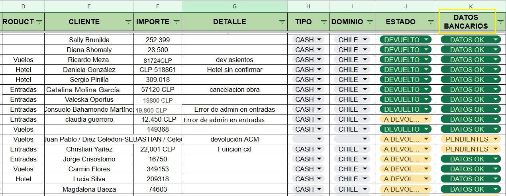

Toda devolución solicitada por el pax que no sea referente a un ticket emitido, debemos refistrarlo y gestionarlo en conjunto con nuestro equipo de administración.
Paso 1: Identificar dominio y producto a devolver
Cada dominio tiene sus propios reportes y facturación, por eso al momento de solicitar una devolución tenemos que verificar a que pseudo pertenece el producto para saber cómo proceder.
Otro punto importante va a ser verificar el producto que estamos por gestionar y que condiciones tiene para la solicitud de reembolso.
Podemos tener diferentes casos, asientos no confirmados, productos no confirmados pero si cobrados (errores de admin), devoluciones de hoteles (totales o parciales), devoluciones de entradas/espectaculos (cancelaciones de eventos), etc y cada uno va a tener politicas de devolución que debemos chequear para continuar la operativa.
Paso 2: Confirmar datos de pago
Una vez que nos aseguramos que podemos avanzar con el reembolso, debemos verificar el metodo de pago que usó el pax para confirmar dicho producto/reserva ya que el reembolso siempre debe ser por el mismo medio.
Si el pago fue con tarjeta, se va a proceder con el reintegro a traves de la plataforma por la cual se cobró.
En el caso de producto dominio ARG podemos devolver el importe a la tarjeta directamente por la caja del admin o bien desde la plataforma de Decidir
Si el producto es dominio PE/CL, es decir que el cobro se ejecuto por Niubiz o Transbank, las devoluciones deben ser gestionadas por la pasarela de cobro con un usuario habiliitado para dicha operacion. En este caso, solo Lisseth cuenta con el acceso.
Estamos trabajando para poder mejorar ese proceso
Por el contrario, si el pago fue mediante transferencia, tarjeta de débito, pago en efectivo, hay que solicitar el pax los datos bancarios necesarios para reembolsar el importe.
La plantilla que debemos usar para la gestión es: DEVOLUCION NO AEREA - PE/CL / DEVOLUCION NO AEREA - ARG
Paso 3: Carga en planilla
Para un mejor orden, todos estos pedidos de devoluciones los vamos a cargar en la planilla Seguimiento devoluciones - Solapa DEVOS NO AEREAS 2025
Todos los agentes involucrados en el proceso deben seguir la gestión mediante esta planilla dividida en dominios.
Una vez cargada la devolución en este compartido el equipo de administracion la gestionará en un tiempo aproximado de 24 horas hs.
Es clave que todas las celdas esten completas con la información correcta.
En caso de estar aún aguardando los datos bancarios, vamos a cargar el pedido informando PENDIENTE en la columna DATOS BANCARIOS

Paso 4: Autorización y contabilización
Para que el equipo administrativo puede proceder con el reembolso es necesario la autorización del superior.
Es importante entender este proceso ya que desde un comienzo un agente de SAC no deberia cargar un pedido que no haya pasado por la autorización de la capitana de turno.
Ya con ese ok, el agente completa toda la linea con la información correspondiente y el pedido queda pendiente de autorización de la jefa de administracion.
Finalmente cuando tenemos ese ok, el equipo de administración puede ejecutar el reembolso.